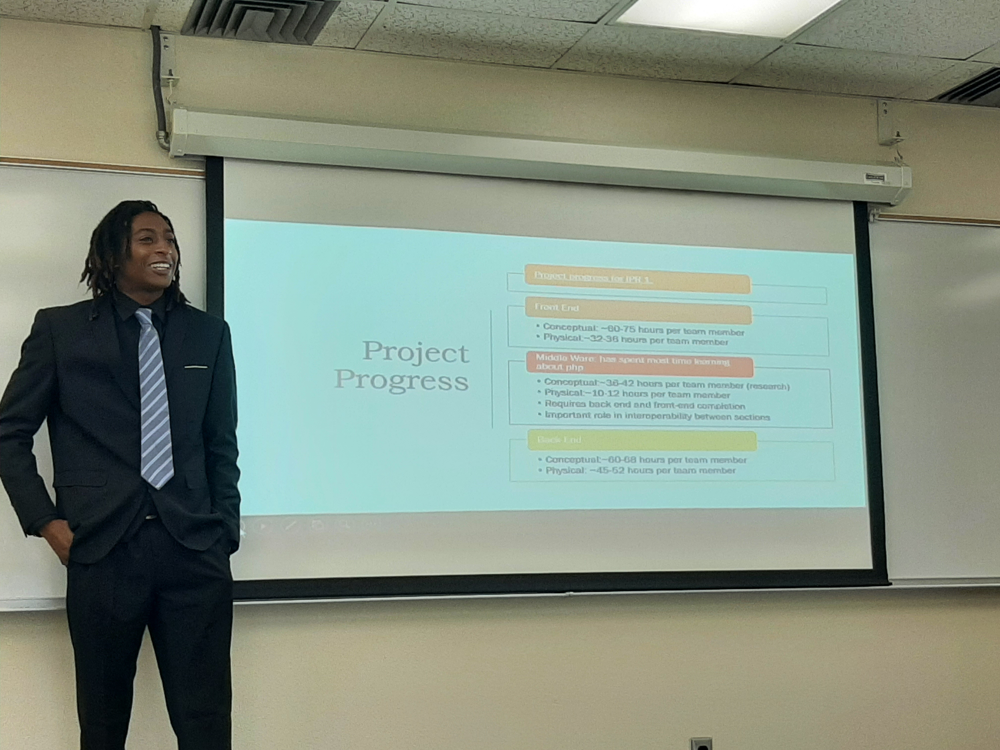

1/1

My Capstone Project
2/2

My Capstone Project
3/3

My Capstone Project
4/4
My Capstone Project
Greetings! Thanks for visiting this webpage and taking the time to view my content.
About ME:
My Name is Justin Winchester I am 33 years old. I am currently a senior attending Cameron University seeking my Bachelor's degree in Computer Science.
This year is very exciting for me as I am achieving one of my biggest educational goals thus far, and I will be attending Graduation ceremonies this weekend!
My educational journey is not yet officially over and I will be completing my degree requirement this Summer and Fall semesters of 2021, GO AGGIES!!!!GO AGGIES!!!!
I was born in East Chicago, Indiana. I have lived in many states across the Unites States including:
I am currently not employed, I chose to prioritize my education and learn as much information about computer science as I could manage this Spring 2021 school semester.
However, before enrolling in college in my late 20's I wore many hats so to speak, as I have worked in various different types of employment fields and had lots of fun trying out and learning new things!
More Info About Me can be located on my social media accounts, heres a link to one !
Justin W Instagram